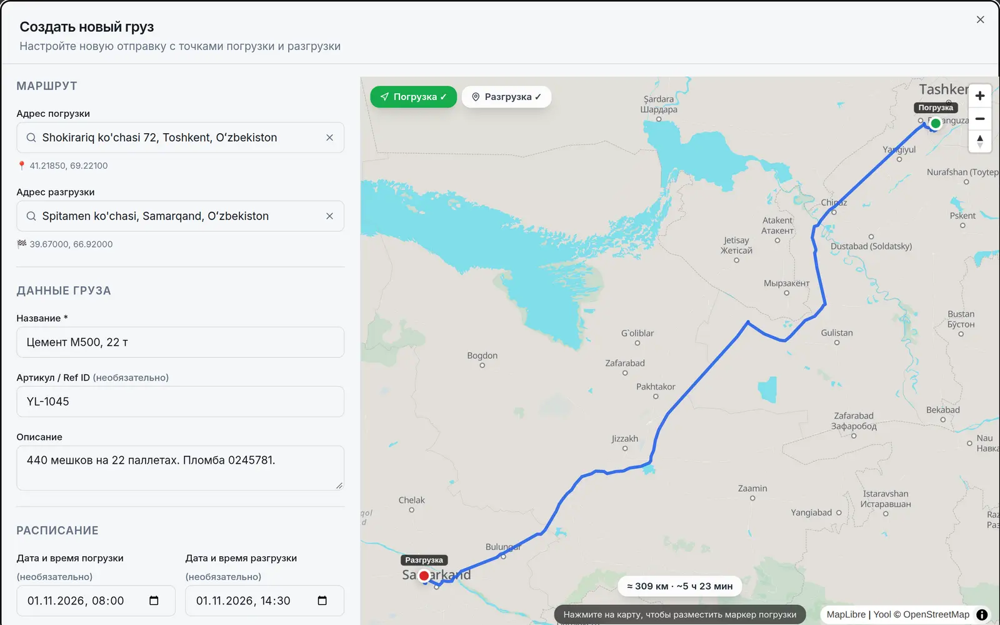
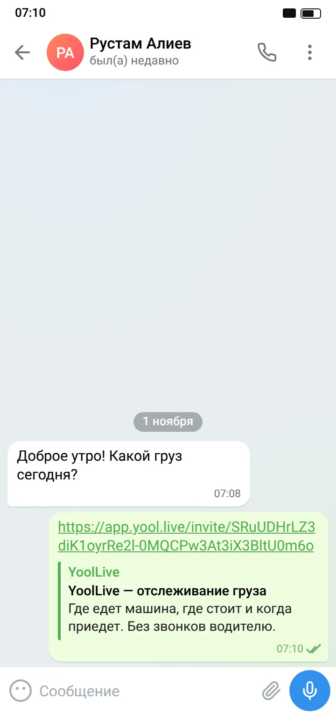
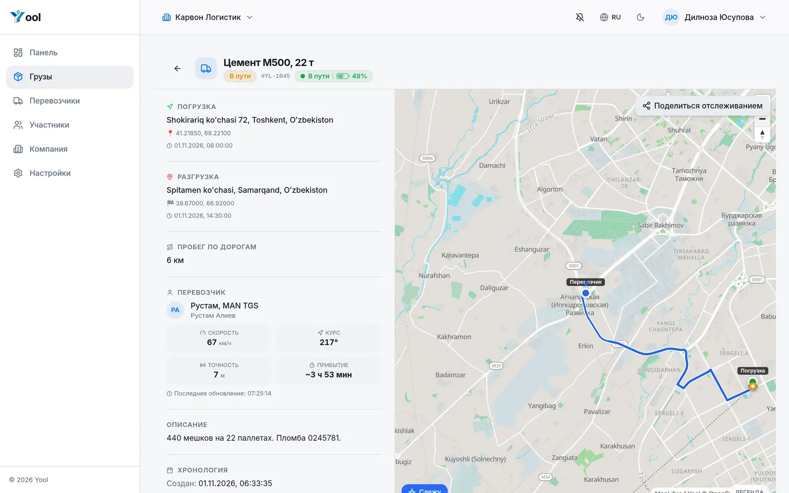
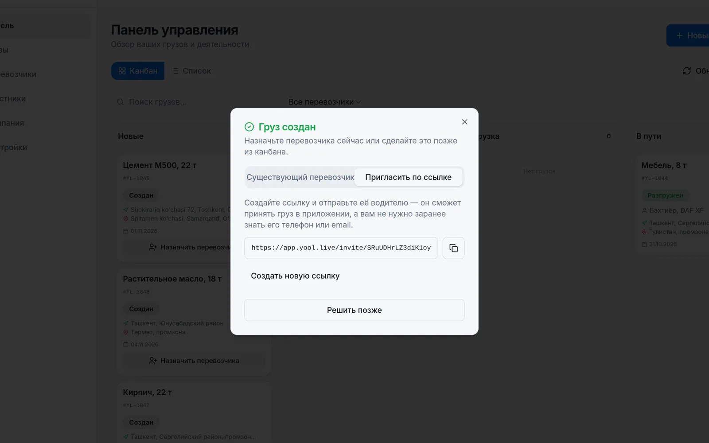

Десктоп: активен шаг 1
Как это работает
Ничего не нужно ставить на машину. Хватит смартфона водителя.
Вставьте ссылку на адрес из 2GIS, Яндекс Карт или Google Maps. Маршрут и время в пути посчитаются сами.

В Telegram или любом мессенджере. Водитель открывает её и принимает груз одним касанием.

Где едет, где стоит, когда приедет. Фото документов приходят на каждом шаге.

Десктоп: активен шаг 2 (телефон в той же сцене)
